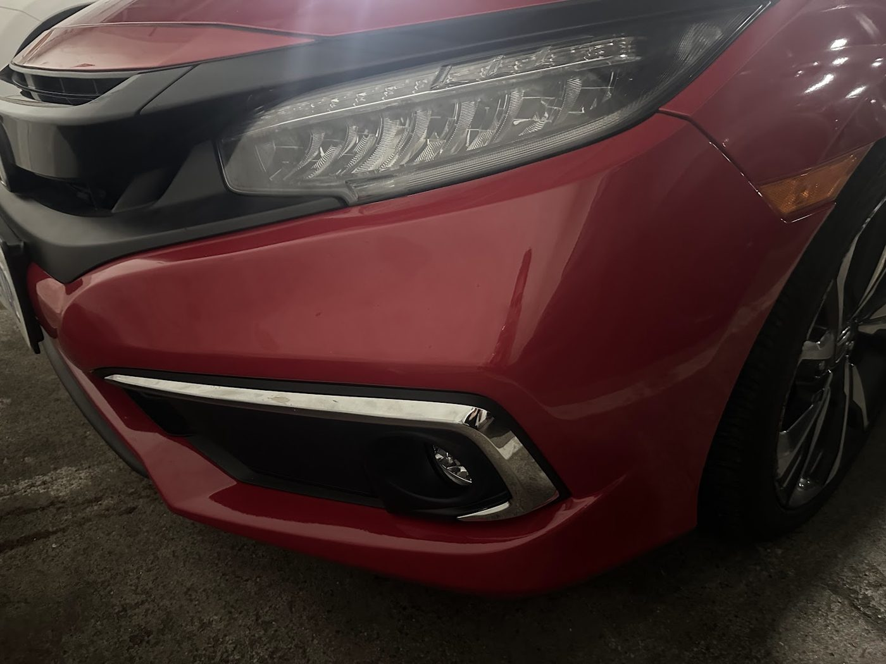

Auto body shop · Laird Dr, Leaside / East York
Dents out. Paint matched. Back on the road.
Collision and body repair on Laird Drive. Customers mention fair quotes, cars finished early, and a full clean inside before pickup.
- Fair, clear quotes
- Often done early
- Interior cleaned at pickup
- Repair over replace
The work customers describe
Collision & body repair
Bumpers, fenders, doors and side mirrors. Reviewers include insurance claims and a rear-end collision.
Paint & colour matching
Full paint on a 2002 Subaru, a colour-matched Bronco, and “any paint repair work.”
Small fixes & extras
Mirrors, tail lights, door glass and a rattling spoiler. Several say their car came back cleaned inside.
This summary comes from Google reviews and the Google listing (category: auto body shop). The shop doesn’t publish prices, so none are shown. Call for a quote.
Customer project · 2002 Subaru
Front-end damage, full repaint
“Fixed my 2002 Subaru (front right damage) and full paint. Glad to have it back to ‘like new’ again.”
David Toles, Google review · photo his
What customers say
4.9 ★ from 404 Google reviews (checked Nov 3, 2026). Quotes are word for word. Each one says where it was read: on the Google listing itself, or on a public page that copies reviews. The full Google review list can’t be opened without signing in, so most quotes here come from those copies.
★★★★★
Had to replace my Bronco Fenders and they did a perfect job. 15 out of 10. They even polished it and the residue was removed from the old fenders that weren’t done well from past shops. This was my first time going to them. The prices are amazing compared to what dealership offer. I would 110 percent recondmend them and this is coming from a person who goes to the dealership for everything and definitely will be a customer to them. Service is amazing as well.
★★★★★
They did a very clean and perfect job for the front bumper repair, my car looks like brand new. Very respectful and friendly staff. It was my first time taking my Honda Civic there. I don’t think I ever go anywhere else from now on.
They deserve a FIVE star for sure.
★★★★★
This is a shop that goes the extra mile to do the best they can for the customer. Fixed my 2002 Subaru (front right damage) and full paint. Glad to have it back to "like new" again. Thanks Dougei and thanks to the team of technicians who clearly take pride in their work!
★★★★★
Came here based on the reviews and am super pleased. Their quote was the most reasonable of all the shops I checked, they finished it a day earlier than promised. And they fully clean the inside of your car as well (and mine was so dirty lolll)
Amazing service. They weren't pushy, super chill and friendly.
★★★★★
I had a great experience with this body shop! The quality of the repair work on my car's bumper was excellent, and it looks as good as new.Dughei and his team were professional, friendly, and attentive to detail through out the process. They took great care of my car and made everything smooth and stress free.
★★★★★
Brought in my Toyota Corolla Cross for repair after being rear-ended on the highway late September. The staff were exceptional in customer service and repair work. The process was seamless and the team updated on the progress of the work. I received my vehicle today in wonderful condition. My thanks to everyone involved in dealing with this matter.
★★★★★
I had a small repair only but still received great service. The car looks like new. Would definitely go back and would recommend for any paint repair work.
★★★★★
Was very happy with the service from Direct Repair. They were very transparent on the work and costs, making sure I understood the work to be done. They completed the job on time and at very good pricing (they were 30% less expensive that the repair shop recommended by the dealer). Would highly recommend and definitely return for any other work I had.
Star rating not shown in source
Two other body shops told me I needed a full bumper replacement but Direct-Repair was able to do it as a (perfect) repair, saving me hundreds of dollars. Dougei and Jessica are friendly, accommodating and professional. Thankfully I don't need a body shop often, but the next time I do I'll be coming back here.
Star rating not shown in source
Definitely a very positive review. Family-owned business- they did a great job, cleaned the car fully without us requesting and were done two days early. Reliable and friendly customer service. Will return for sure.
Star rating not shown in source
This is the 2nd time I've used Direct Repair. Dougei and his daughter Jessica are wonderful people. They completed my van on-time and did a bit of extra work, on something else, free of charge.
Some of the paint from before had started to bubble and they stood behind their work, and re-did it free of charge. No questions asked.and only too happy to do so.
Hope I won't have to but will definitely return if need be and would highly recommend them.
Recent work
Real photos from Direct-Repair Leaside Inc.’s public Google listing and its customers’ reviews. Tap to enlarge.
Visit the shop
117 Laird Dr
East York (Toronto), ON M4G 3T7
| Monday | 8 a.m.–5 p.m. |
|---|---|
| Tuesday | 8 a.m.–5 p.m. |
| Wednesday | 8 a.m.–5 p.m. |
| Thursday | 8 a.m.–5 p.m. |
| Friday | 8 a.m.–5 p.m. |
| Saturday | Closed |
| Sunday | Closed |
These are the hours on Google today. Birdeye lists Saturday 9 a.m.–1 p.m. but Google says closed, so call before coming on a Saturday.